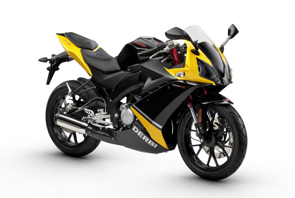

| Inicio | Publicidad | Categorias | Informacion |
|---|---|---|---|
Una motocicleta, comúnmente conocida en español con la abreviatura moto, es un vehículo de dos ruedas, impulsado por un motor que acciona la rueda trasera, en raras excepciones en las que el impulso se daría en la rueda delantera o en ambas, superior a 50 cm³ si es de combustión interna y/o con una velocidad máxima por construcción superior a 45 km/h. El cuadro o chasis y las ruedas constituyen la estructura fundamental del vehículo. La rueda directriz es la delantera. Pueden transportar hasta dos personas, y tres si están dotadas de sidecar. |
TIPOS DE MOTOCICLETAS
Motos Deportivas Las motos deportivas van equipadas en su mayoría de un carenado (carrocería) que mejora su aerodinámica con el fin de alcanzar altas velocidades, habitualmente por encima de los 250km/h o incluso más de 300km/h en los modelos más exóticos.Motos Naked La Moto Naked (desnuda), obtiene este calificativo por la ausencia del carenado, dando la impresión de llevar al descubierto gran parte de la mecánica de la misma. Son motos de Alto Cilindraje (300cc o más) y suelen tener mucha potencia. Son ideales para sentir la mecánica de la moto desde todas las perspectivas. |
||
|  | Hablaremos sobre la bicicleta Es un medio de transporte sano, ecológico, sostenible y económico, válido para trasladarse tanto por ciudad como por zonas rurales. Su uso está generalizado en la mayor parte de Europa, y llega a ser, en países como Suiza, Alemania, Países Bajos, Bélgica, algunas zonas de Polonia y los países escandinavos, uno de los principales medios de transporte. En Asia, especialmente en China y la India, es el principal medio de transporte. |
|
|
|
ENTRAR A CLASES VIRTUALES |